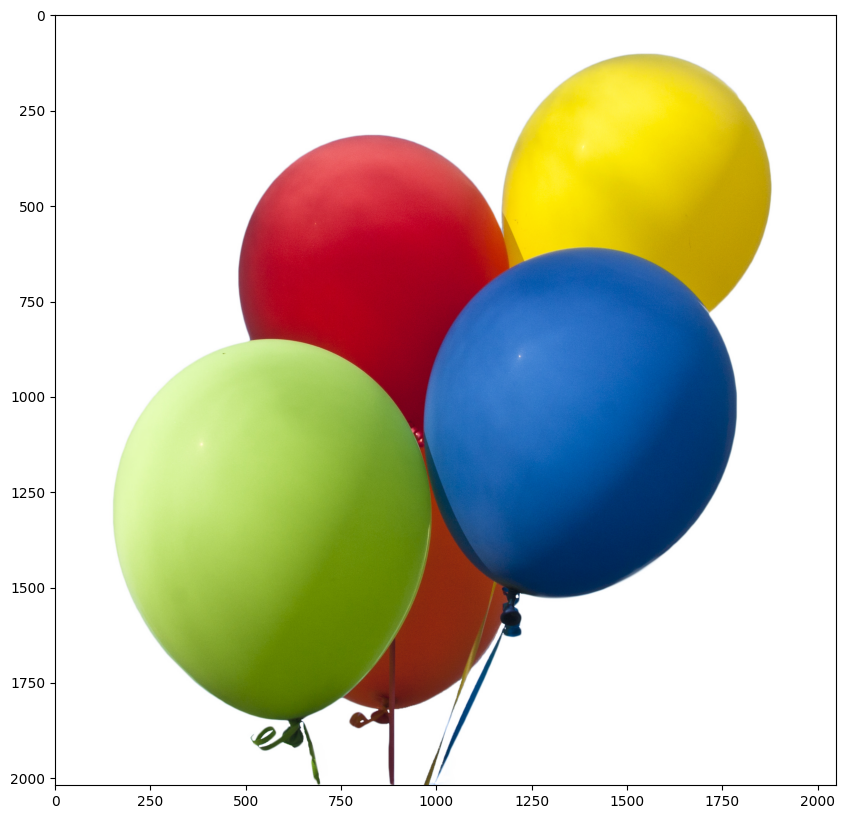
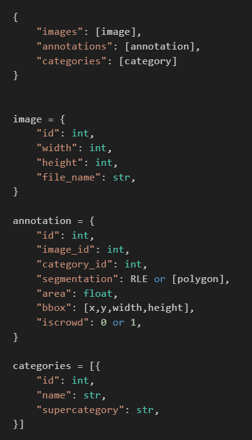
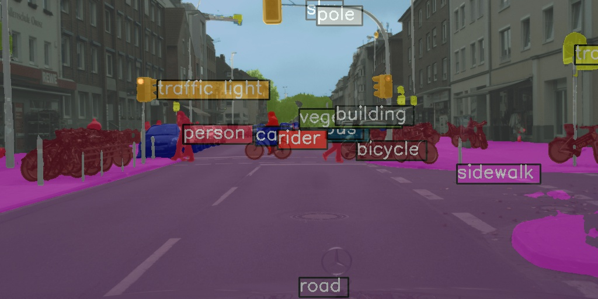
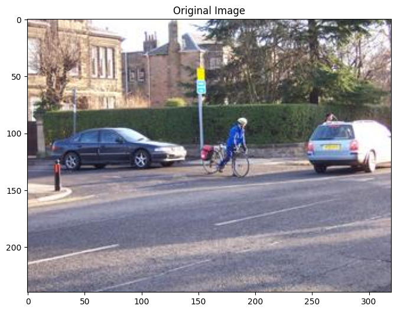
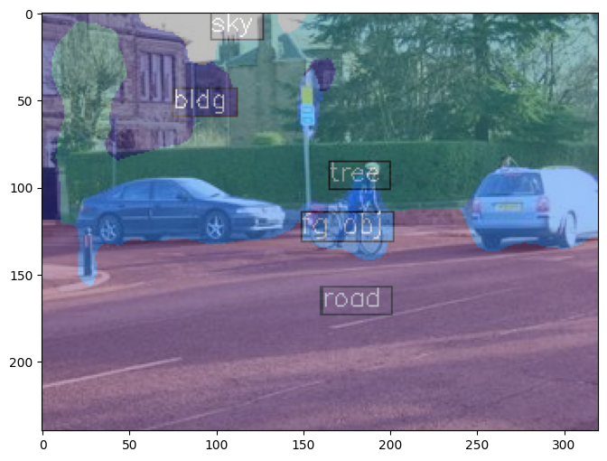
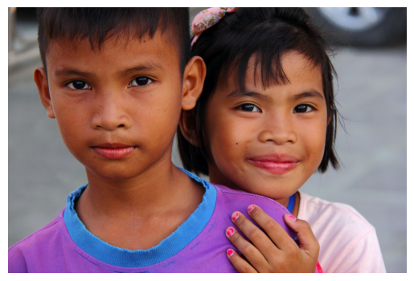
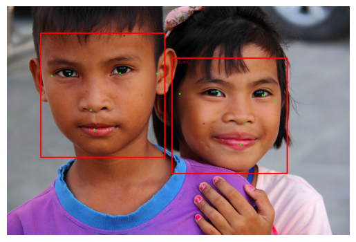
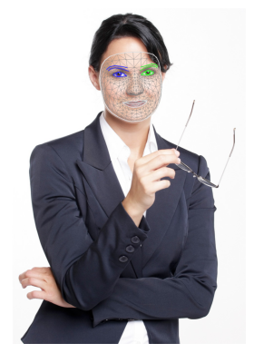
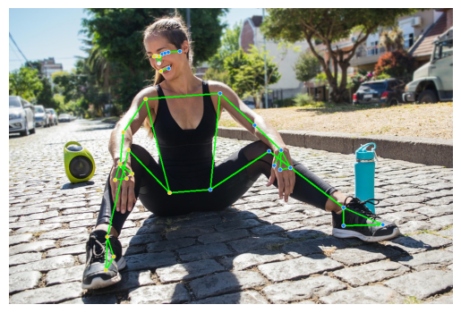

PYTORCH VE COMPUTER VISION
EĞİTİM YOLCULUĞUM
PyTorch, OpenMMLab ve MediaPipe
Eray Erdoğan
İçindekiler

- PyTorch Getting Started
- PyTorch Blitz
- MMDetection
- MMSegmentation
- MediaPipe Framework
PyTorch: Hızlı Başlangıç

- 1. Veri Hazırlığı:
DatasetveDataLoaderile veri yükleme. - 2. Model Oluşturma:
nn.Modulemiras alarak katmanları tanımlama. - 3. Optimizasyon: Loss function (CrossEntropy) ve Optimizer (SGD).
- 4. Eğitim Döngüsü:
- Forward Pass
- Loss Hesaplama
- Backpropagation (
backward) - Optimizer Adımı (
step)
- 5. Model Kaydetme:
state_dictile ağırlıkları saklama.
Custom Dataset Yapısı
Kendi veri setimizi oluşturmak için 3 temel (sihirli) metodu özelleştirmeliyiz:
__init__
Veri setinin başlangıç ayarları. Dosya yolları, dönüşümler (transforms) burada tanımlanır.
__len__
Veri setindeki toplam örnek sayısını döndürür.
__getitem__
Belirtilen indeksteki (idx) bir örneği (görüntü ve etiket)yükler ve döndürür.
Lambda Dönüşümleri
Etiketleri One-Hot Encoding formatına çevirmek için Lambda fonksiyonları kullanılır.
10, dtype=torch.float).scatter_(
dim=0, index=torch.tensor(y), value=1))
PyTorch Modeline Giden Yol (8 Adım)
Numpy
Manuel backpropagation, tensor yok.
Tensors
GPU desteği geldi, hala manuel backprop.
Autograd
Otomatik türev alma (.backward).
Custom Autograd
Kendi türev fonksiyonunu yazma.
nn Module
Yüksek seviye katmanlar (Sequential, Linear).
optim
Otomatik ağırlık güncelleme (SGD, RMSprop).
Custom nn.Module
Kendi model sınıfını (class) oluşturma.
Control Flow
Dinamik grafikler ve weight sharing.
MMDetection'a Hoş Geldiniz
MMDetection, OpenMMLab ekosisteminin parçası olan güçlü bir object detection ve instance segmentation framework'üdür.
Hazır Model
Algoritma
Tabanlı Tasarım
MMDetection: 7 Ana Bileşen
1. APIs
Model inference için üst seviye API'ler
2. Structures
bbox, mask ve DetDataSample veri yapıları
3. Datasets
Detection, segmentation için dataset desteği + transforms + samplers
4. Models
Backbones, necks, heads, losses, layers - modelin kalbi
5. Engine
Runner, schedulers, optimizers ve hooks - eğitim döngüsü
6. Evaluation
Farklı metrikler ve evaluator'lar
7. Visualization
Detection sonuçlarını görselleştirme araçları
MMDetection Kurulum Süreci
conda activate openmmlab
mim install mmengine
mim install "mmcv==2.1.0"
Hızlı Başlangıç: DetInferencer
DetInferencer ile inference yapmak çok basit!
✨ Özellikler:
- ▸ Sadece model adı yeterli - weights otomatik indirilir
- ▸ Tek satır kod ile inference
- ▸ Görsel, video, batch işleme desteği
- ▸ Otomatik görselleştirme
model='rtmdet_tiny_8xb32-300e_coco'
)
Test Görselini Hazırlayalım

📁 demo/test_images/demo.jpg
DetInferencer ile İnference Sonucu

✅ Nesneler başarıyla tespit edildi!
📤 Çıktı: demo/outputs/vis/demo.jpg
6 Farklı Model ile Karşılaştırma

demo

large_image
street
kitchen
animals
sports
DetInferencer'ın Esnekliği
🌐 URL'den Direkt İnference
'https://example.com/image.jpg',
out_dir='outputs_url'
)
📦 Batch işleme (Liste ile)
inferencer(
images,
out_dir='outputs_batch'
)
İnference Çıktısından Erişilebilen Bilgiler
# Her tespit edilen nesne için:
Label ID: 13 # Sınıf numarası (ör: 13 = koltuk)
Score: 0.8762 # Güven skoru (0-1)
BBox: [217.5, 172.8, 457.9, 385.8] # [x1, y1, x2, y2]
Video İşleme Desteği
mmcv.VideoReader ile modellere video da iletebiliyoruz
📹 Input: demo/demo.mp4
Video İnference Sonucu
Detection sonuçları video üzerinde görselleştirildi
✅ Video üzerinde gerçek zamanlı detection!
📤 Output: demo/output.mp4
MMDetection'da Config Sistemi
💡 Neden Config?
MMDetection'da "kod yazmaktan çok deneyi tarif ediyorsun"
Tek Noktadan Yönetim
Model, dataset, eğitim döngüsü, optimizer, scheduler, hook'lar... hepsi tek bir yerde "deney tarifi" olarak duruyor.
Kolay Deney Üretimi
Aynı altyapıyla farklı modelleri/datasetleri kolayca değiştirmenin ana yolu config dosyalarıdır.
Config'in Ana Blokları
model
backbone/neck/head + train_cfg/test_cfg (algoritmanın kendisi)
data_*
train_dataloader, val_dataloader, test_dataloader + pipeline (Load/Resize/Flip/Pack...)
train/val/test_cfg
runner/loop tipi ve epoch/iter ayarları
optim_wrapper
optimizer + gradient clip + (istersen AMP)
param_scheduler
LR warmup + MultiStep/Cosine vb.
hooks
default_hooks / custom_hooks: log, checkpoint, eval, visualization, seed...
env_cfg & runtime
distributed backend, log level, resume/load_from vs.
En Kritik Fikir: Inheritance (Kalıtım)
Çoğu config "tam dosya" değil; bir veya birkaç base config'ten miras alıp sadece farkı yazar.
'models/faster_rcnn_r50.py',
'datasets/coco_detection.py',
'schedules/schedule_1x.py',
'default_runtime.py'
]
✅ Avantaj 1
Tek satırla backbone veya dataset değiştirip deney üretirsin
✅ Avantaj 2
Kopyala-yapıştır config şişmesini engellersin
Küçük Değişiklikler Nasıl Yapılır?
🔧 Yöntem 1: Config dosyasında override
optimizer=dict(lr=0.01)
)
batch_size=16
)
⚡ Yöntem 2: Komut satırında --cfg-options
--cfg-options \
optim_wrapper.optimizer.lr=0.01 \
train_dataloader.batch_size=16
💡 LR değiştir, batch size değiştir, pipeline'a augment ekle... hepsi config ile!
Mask R-CNN ile Instance Segmentation

Ne Yapar?
Mask R-CNN, "two-stage detector" ailesinden bir instance segmentation modelidir: Hem bbox hem de piksel seviyesinde maske üretir.
Genelde tek-aşamalılara göre daha yüksek doğruluk (özellikle zor sahnelerde)
Proposal + RoI işlemleri yüzünden daha yavaş ve daha ağırdır
Mask R-CNN: Model Yapısı
Backbone (ResNet)
Girdi görüntüsünü alıp çok katmanlı "feature map"'lere çeviren temel CNN omurgası. Kenar/köşe gibi basitten başlayıp daha soyut nesne özelliklerine kadar temsil üretir.
Neck (FPN)
ResNet'in farklı çözünürlüklerdeki özellik haritalarını birleştirip çok ölçekli (multi-scale) bir piramit oluşturur. Küçük-büyük nesneleri yakalamak için kritik!
RPN Head
Stage 1: FPN'den gelen feature map'ler üzerinde "burada nesne olabilir" dediği bölgeler için aday kutular (proposals) üretir. Objectness skoru + BBox regression çıktısı verir.
RoI Head
Stage 2: RPN'in ürettiği proposal'lar üzerinde çalışır. RoIAlign ile feature çıkarıp iki dal:
• Box head: Sınıflandırma + bbox refine
• Mask head: Piksel seviyesinde maske (Instance segmentation!)
💡 ResNet→FPN ile özellik çıkar, RPN ile aday bul, RoI Head ile kutu+maske üret!
Düşük Seviye API: init_detector & inference_detector
🔧 Ne İşe Yarar?
Düşük/orta seviye "tek iş" API: Verilen model + image ile forward + postprocess yapıp sonucu döndürür.
config='config.py',
checkpoint='model.pth',
device='cuda:0'
)
model,
'demo.jpg'
)
📁 Örnek dosya: demo/demo.jpg
Mask R-CNN Çıktı Örneği
✅ Hem bounding box hem de instance mask üretildi!
Custom Dataset ile Detector Eğitimi
Dataset'i Uyumlu Hale Getir
COCO formatına dönüştür
Config Dosyalarını Revize Et
Veri yolları, sınıf sayısı
Train Et
Runner ile eğitim başlat
📋 MMDetection Dataset Desteği - 3 Yöntem
💡 MMDetection COCO formatını öneriyor - implement etmesi daha kolay!
Örnek: Balloon Dataset
🎈 Tek sınıflı (balloon) instance segmentation dataseti
Dönüşüm: VIA → COCO Format
VIA (VGG Image Annotator) formatından COCO formatına dönüştürülecek
Balloon Dataset
COCO Format Yapısı
✅ COCO formatına dönüştürüldükten sonra MMDetection ile kullanıma hazır!
Config Ayarları 1: Dataset & Model
Custom dataset için en kritik değişiklikler
1️⃣ Sınıf Tanımı (metainfo)
cfg.metainfo = {
'classes': ('balloon', ),
'palette': [(220, 20, 60)]
}
⚠️ Tek sınıf için bile tuple sonunda virgül şart!
2️⃣ Model Sınıf Sayısı ⚡
cfg.model.roi_head.bbox_head
.num_classes = 1
cfg.model.roi_head.mask_head
.num_classes = 1
🔴 En sık yapılan hata: bunu unutmak!
3️⃣ Dataloader Ayarları
# Train dataloader
cfg.train_dataloader.dataset
.ann_file = 'train/annotation_coco.json'
.data_prefix.img = 'train/'
.metainfo = cfg.metainfo
4️⃣ Evaluator Ayarları
cfg.val_evaluator.ann_file =
cfg.data_root + '/val/annotation_coco.json'
# Test = Val
cfg.test_dataloader = cfg.val_dataloader
cfg.test_evaluator = cfg.val_evaluator
Config Ayarları 2: Training & Optimization
Eğitim sürecini kontrol eden kritik parametreler
1️⃣ Transfer Learning 🚀
cfg.load_from = 'checkpoints/
mask_rcnn_r50_caffe_fpn_...
...mstrain-poly_3x_coco.pth'
💡 COCO pre-trained → Daha yüksek performans
2️⃣ Learning Rate Ölçekleme ⚡
# 1-GPU için 8'e böl!
cfg.optim_wrapper.optimizer.lr
= 0.02 / 8
🔴 Linear scaling rule: LR ∝ batch_size
3️⃣ Kontrol Aralıkları
cfg.train_cfg.val_interval = 3
# Checkpoint her 3 epoch'ta
cfg.default_hooks.checkpoint
.interval = 3
# Log her 10 iteration'da
cfg.default_hooks.logger.interval = 10
4️⃣ Reproducibility & Logging
set_random_seed(0, deterministic=False)
# TensorBoard ile izle
cfg.visualizer.vis_backends
.append({"type":
'TensorboardVisBackend'})
✅ Bu ayarlarla single GPU'da custom dataset üzerinde Mask R-CNN eğitimine hazırız!
MMEngine Runner ile Training
Eğitimi başlatmak için tek satır yeterli!
# Config'den Runner oluştur ve başlat
runner = Runner.from_cfg(cfg)
runner.train()
Tek Çatı Orkestrasyon
train/val/test loop'ları, epoch kontrolü config'ten
Config-First
Deney tekrarı ve versiyon kontrolü kolaylaşır
Hook Sistemi
Log, checkpoint, eval → tak-çıkar
Checkpoint & Resume
Kesintiden devam, en iyi modeli sakla
Distributed Ready
Single → Multi-GPU geçişi kolay
Standart Logging
LogProcessor ile tutarlı metrik akışı
MMDetection: Neler Öğrendik?
✅ Kurulum & Hızlı Başlangıç
OpenMIM ile kurulum, DetInferencer ile tek satırda inference
✅ Config Sistemi
Inheritance, override, --cfg-options ile esnek deney yönetimi
✅ Model Zoo
RTMDet, Faster R-CNN, Mask R-CNN, RetinaNet karşılaştırması
✅ Two-Stage Detectors
Mask R-CNN mimarisi: Backbone → FPN → RPN → RoI Head
✅ Custom Dataset Training
COCO format dönüşümü, metainfo, num_classes ayarları
✅ MMEngine Runner
Config-first training, hook sistemi, checkpoint yönetimi
🚀 Sırada: MMSegmentation ile Semantic Segmentation
MMSegmentation'a Hoş Geldiniz
MMSegmentation, OpenMMLab ekosisteminin semantic segmentation framework'üdür. Her piksele sınıf etiketi atayan modeller geliştirmek için kullanılır.
Hızlı Başlangıç: PSPNet ile Inference
init_model + inference_model ile semantic segmentation
# Model ve checkpoint
config = 'pspnet_r50-d8_..._cityscapes.py'
ckpt = 'pspnet_r50-d8_..._40k.pth'
# Model başlat
model = init_model(config, ckpt)
# Inference
result = inference_model(model, 'demo.png')
Input

Output (Segmentation)
Video Segmentation
Frame-by-frame semantic segmentation
Input Video
Segmentation Output
Her frame için ayrı inference yapılıp, sonuçlar video olarak birleştirildi
MMSegmentation'da Config Nedir?
"Kod yazmak yerine deneyi tarif ediyorsun"
Model mimarisi, dataset, eğitim schedule'ı ve runtime ayarlarının tamamı tek bir config dosyasında toplanır. Aynı kodu değiştirmeden, sadece config değiştirerek farklı deneyler çalıştırabilirsin.
Deney Tarifi
Tüm ayarlar tek dosyada
Tekrarlanabilirlik
Aynı config = aynı sonuç
Kalıtım (Inheritance)
Base config'ten miras al
Hızlı Deney
Sadece farkı yaz
Config Yapısı: Model
PSPNet örneği üzerinden model config anatomisi
🦴 Backbone
type='ResNetV1c',
depth=50,
dilations=(1,1,2,4))
Feature extractor (özellik çıkarıcı)
🎯 Decode Head
type='PSPHead',
pool_scales=(1,2,3,6),
num_classes=19)
Piksel sınıflandırma başlığı
➕ Auxiliary Head
type='FCNHead',
loss_decode=dict(
loss_weight=0.4))
Yardımcı loss (deep supervision)
📉 Loss Function
type='CrossEntropyLoss',
use_sigmoid=False,
loss_weight=1.0)
Segmentation için CE loss
Config Yapısı: Dataset & Schedule
Veri ve eğitim ayarları
📁 Dataset Config
data_root='data/cityscapes/'
crop_size=(512, 1024)
Dataset tipi ve yolu
🔄 Train Pipeline
dict(type='LoadImageFromFile'),
dict(type='RandomResize'),
dict(type='RandomCrop'),
dict(type='RandomFlip')]
Data augmentation zinciri
⚙️ Optimizer
type='SGD',
lr=0.01,
momentum=0.9)
SGD with momentum
📈 LR Scheduler
type='PolyLR',
power=0.9,
end=40000)
Polynomial decay (segmentation klasik)
_base_ = ['models/pspnet.py', 'datasets/cityscapes.py', 'schedules/40k.py', 'runtime.py']
Segmentation Türleri
Semantic Segmentation
Her piksele sınıf etiketi atar.
Aynı sınıftaki tüm nesneler birleşik görünür.
Instance Segmentation
Her nesneyi ayrı maske olarak ayırır.
Aynı sınıfta birden çok obje ayrı ayrı.
Panoptic Segmentation
Semantic + Instance birlikte.
Things = instance, Stuff = semantic
Custom Dataset ile Finetune
Kendi veri setinle semantic segmentation modeli eğitmek
Dataset Hazırla
Görüntüler + maske etiketleri
img/ + ann/ klasörleri
Config Ayarla
num_classes, data_root
pipeline, batch_size
Train Et
Runner.from_cfg(cfg)
runner.train()
Örnek: Stanford Background Dataset
8 sınıflı outdoor scene segmentation
Örnek görüntüler
Segmentation maskeleri
palette = [[128,128,128], [129,127,38], [120,69,125], [53,125,34],
[0,11,123], [118,20,12], [122,81,25], [241,134,51]]
Yeni Dataset Sınıfı Tanımlama
MMSeg'in BaseSegDataset'inden türetme
from mmseg.datasets import BaseSegDataset
@DATASETS.register_module()
class StanfordBackgroundDataset(BaseSegDataset):
METAINFO = dict(
classes=('sky', 'tree', 'road', 'grass',
'water', 'bldg', 'mntn', 'fg obj'),
palette=[[128,128,128], ...]
)
def __init__(self, **kwargs):
super().__init__(
img_suffix='.jpg',
seg_map_suffix='.png',
**kwargs)
@DATASETS.register_module()
Config'ten çağrılabilir hale getirir
METAINFO
Sınıf isimleri ve renk paleti
BaseSegDataset
Temel işlevler hazır gelir
Config Ayarları 1: Model & Norm
Stanford Background için kritik model ayarları
1️⃣ BatchNorm (Single GPU) ⚡
cfg.norm_cfg = dict(
type='BN',
requires_grad=True)
🔴 Single GPU'da SyncBN hata verir!
2️⃣ Sınıf Sayısı (num_classes) ⚡
cfg.model.decode_head
.num_classes = 8
cfg.model.auxiliary_head
.num_classes = 8
🔴 Her iki head'de de değiştir!
3️⃣ Crop Size
cfg.model.data_preprocessor
.size = cfg.crop_size
Küçük dataset için küçük crop
4️⃣ Norm Config Yayılımı
= cfg.norm_cfg
cfg.model.decode_head.norm_cfg
= cfg.norm_cfg
Tüm katmanlara BN uygula
Config Ayarları 2: Dataset & Training
Veri ve eğitim parametreleri
1️⃣ Dataset Ayarları
'StanfordBackgroundDataset'
cfg.data_root = data_root
cfg.train_dataloader.batch_size = 8
2️⃣ Transfer Learning 🚀
cfg.load_from = 'models/
pspnet_r50-d8_..._40k.pth'
💡 Pre-trained → Hızlı yakınsama
3️⃣ Training Config
cfg.train_cfg.val_interval = 200
cfg.default_hooks.logger
.interval = 10
4️⃣ Windows Uyumluluğu ⚠️
cfg.train_dataloader.num_workers=0
cfg.train_dataloader
.persistent_workers=False
🔴 Windows'ta şart!
Training & Inference
Runner ile eğitim ve sonuç görselleştirme
runner = Runner.from_cfg(cfg)
runner.train() # 200 iteration
Input
Segmentation Output
MMSegmentation: Neler Öğrendik?
✅ Kurulum & Hızlı Başlangıç
pip install ile kurulum, init_model + inference_model
✅ Config Sistemi
Model, dataset, schedule → Inheritance ile modüler yapı
✅ Segmentation Türleri
Semantic, Instance, Panoptic farkları
✅ Custom Dataset Sınıfı
BaseSegDataset + @DATASETS.register_module
✅ Kritik Config Ayarları
BN vs SyncBN, num_classes, Windows uyumluluğu
✅ Runner ile Training
Config-first yaklaşım, transfer learning
🚀 Sırada: MediaPipe ile Real-time Computer Vision
MediaPipe
Google'ın Real-time ML Framework'ü
MediaPipe Nedir?
Yüz, el, poz tespiti gibi görevler için optimize edilmiş, hafif ML modelleri sunan framework.
Cross-platform: Python, Android, iOS, Web destekli. Real-time performans odaklı.
Bu Sunumda 3 Örnek:
Face Detection
Yüz tespiti + 6 landmark
Face Landmark
478 noktalı face mesh
Pose Landmark
33 vücut noktası + maske
Face Detection: Pipeline
BlazeFace modeli ile hızlı yüz tespiti
🎯 Amaç
Görüntü/video'da yüz(ler)i tespit etmek
📦 Çıktılar
- Bounding Box (yüz kutusu)
- 6 Landmark (gözler, burun, ağız, tragion)
- Confidence score
⚡ Pipeline
- Model indir (detector.tflite)
- FaceDetector oluştur
- Görüntüyü yükle
- detect() ile inference
- Sonucu çiz
Input Görsel
Face Detection: Kod & Çıktı
options = FaceDetectorOptions(
base_options=BaseOptions(
model_asset_path='detector.tflite'))
detector = FaceDetector.create_from_options(options)
image = mp.Image.create_from_file(IMAGE_FILE)
result = detector.detect(image)
for det in result.detections:
cv2.rectangle(..., det.bounding_box)
for kp in det.keypoints:
cv2.circle(..., kp)
Detection Output
Face Landmarker: Pipeline
478 noktalı Face Mesh + Blendshapes
🎯 Amaç
Yüzü bulup 478 landmark (face mesh) çıkarmak
📦 Çıktılar
- face_landmarks: 2D/3D koordinatlar
- Blendshapes: 52 mimik skoru (smile, eyeBlink...)
- Transformation matrix: 3D hizalama
🧠 Model Paketi
face_landmarker.task
İçinde: Detection → Landmark → Blendshape
Input Görsel
Face Landmarker: Kod & Çıktı
options = FaceLandmarkerOptions(
base_options=BaseOptions(
model_asset_path='face_landmarker.task'),
output_face_blendshapes=True,
num_faces=1)
result = landmarker.detect(image)
drawing_utils.draw_landmarks(
image,
result.face_landmarks[0],
connections=FACEMESH_TESSELATION)
Face Mesh Output
Pose Landmarker: Pipeline
33 vücut noktası + segmentation mask
🎯 Amaç
İnsan pozunu tespit edip 33 landmark çıkarmak
📦 Çıktılar
- pose_landmarks: Normalize (0-1) koordinatlar
- pose_world_landmarks: 3D world koordinatları
- segmentation_masks: Kişi silueti maskesi
🧠 Model
pose_landmarker_heavy.task
Detector + Landmarker tek dosyada
Input Görsel

Pose Landmarker: Kod & Çıktı
options = PoseLandmarkerOptions(
base_options=BaseOptions(
model_asset_path='pose_landmarker_heavy.task'),
output_segmentation_masks=True)
result = landmarker.detect(image)
drawing_utils.draw_landmarks(
image, result.pose_landmarks[0],
connections=POSE_CONNECTIONS)
mask = result.segmentation_masks[0]
.numpy_view()
mask = (mask * 255).astype(np.uint8)
Pose + Skeleton Output
MediaPipe: Neler Öğrendik?
✅ Face Detection
BlazeFace ile bbox + 6 landmark tespiti
✅ Face Landmark
478 noktalı mesh + blendshapes
✅ Pose Landmark
33 vücut noktası + segmentation mask
✅ Ortak Pattern
BaseOptions → Options → create_from_options → detect()
💡 Real-time uygulamalar için optimize edilmiş, cross-platform ML çözümleri
Teşekkürler!
PyTorch ve Computer Vision Eğitim Yolculuğum
PyTorch
MMDetection
MMSegmentation
MediaPipe
EE563 - Bilgisayarla Görü
Eray Erdoğan